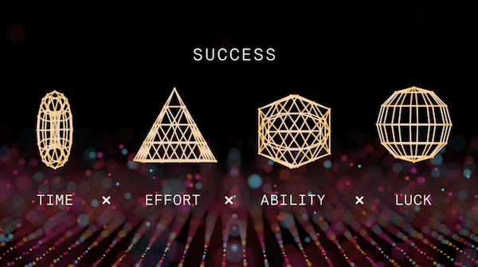

The Founder's Journey 11-May-2019
A fairly personal talk that I gave during what was an emotional rollercoaster of a day. You'll hear me struggle to stay in flow a few times, I half wanted to cancel this talk, but the other half had some things I needed to say.

Ways to scale a product
This is the classic DT talk. All about product.